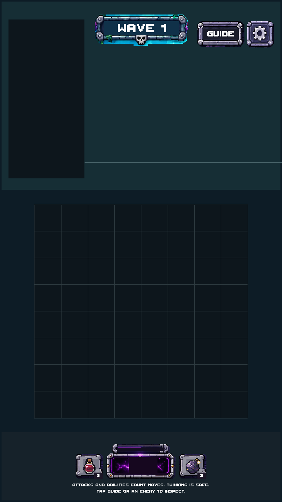
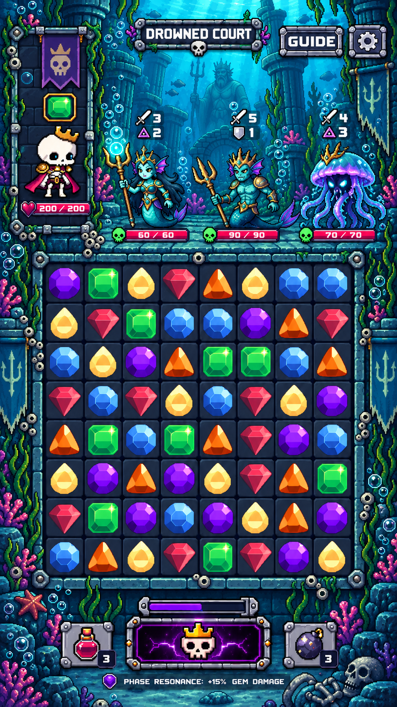
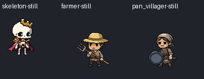
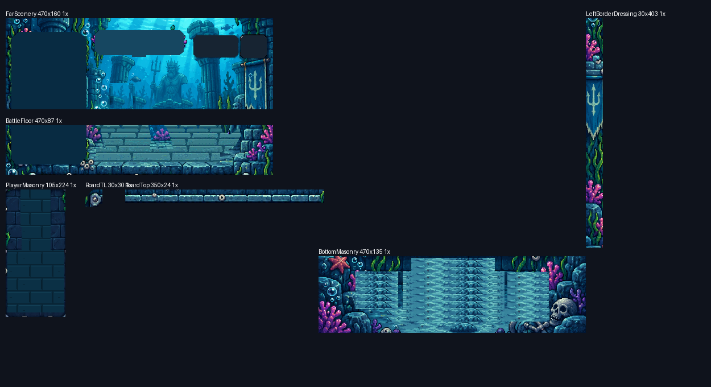

No new underwater art yet. PixelLab connected: 642.20 subscription equivalents available; 0 spent. Existing game assets and production bindings preserved. Waiting for Stage 01 approval.
Full findings · Family plan and estimated budget · Verification summary
Actual Unity play-mode captures, same 720x1280 viewport. Thumbnails below are reduced for comparison; select 1x for actual screen pixels. The empty scaffold contains shared controls and layout guides only.


Tall-view comparison, 720x1600 · Scaffold at 2x

